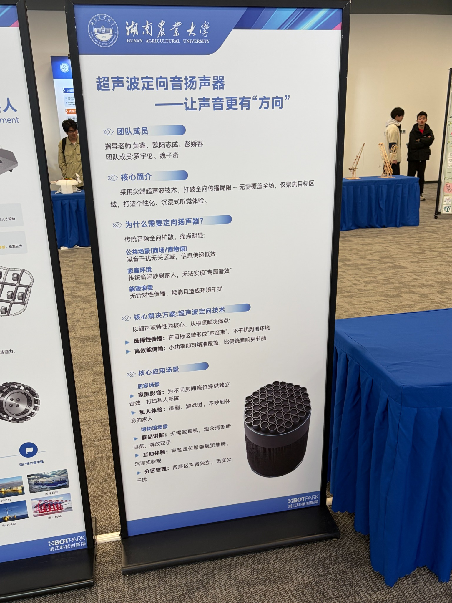
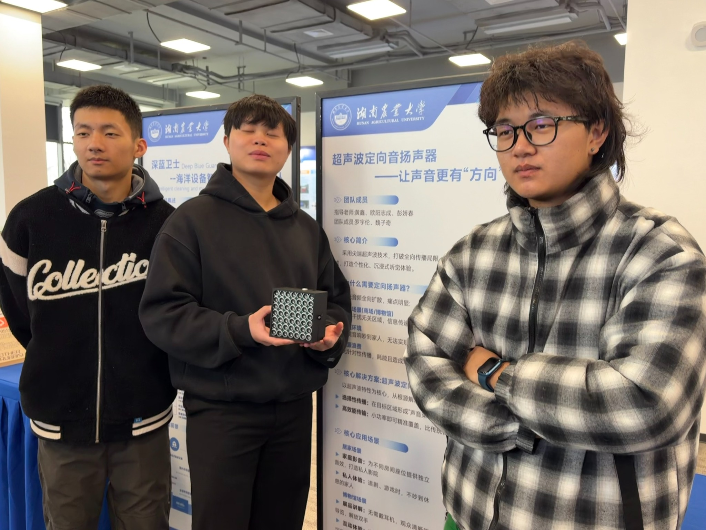

PROJECT 01
一个围绕定向音频传播展开的工程项目。我在项目中承担负责人角色，关注硬件系统搭建、ESP32 功能验证、样机调试与整体推进。
OVERVIEW
通过超声波阵列与相关音频链路，探索“声音更有方向”的实现路径，面向公共展示与个人音频体验场景。
负责整体推进、任务分工与展示沟通，同时参与硬件系统搭建、蓝牙音频功能验证与样机调试。
已完成基础样机开发，实现蓝牙音频接收与基础定向发声，并完成展示与联调验证。
ENGINEERING
GALLERY

